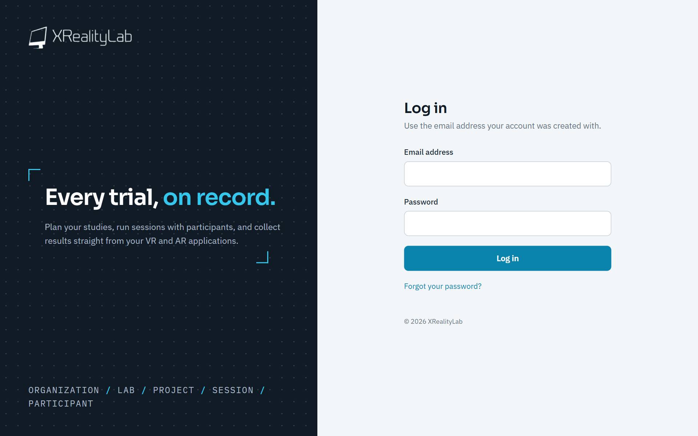
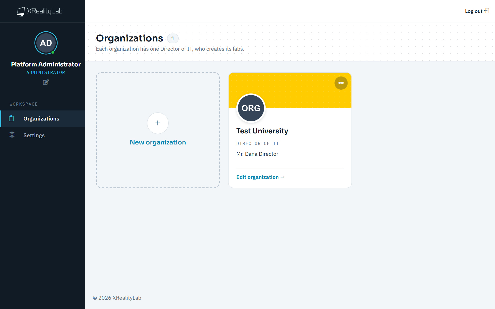
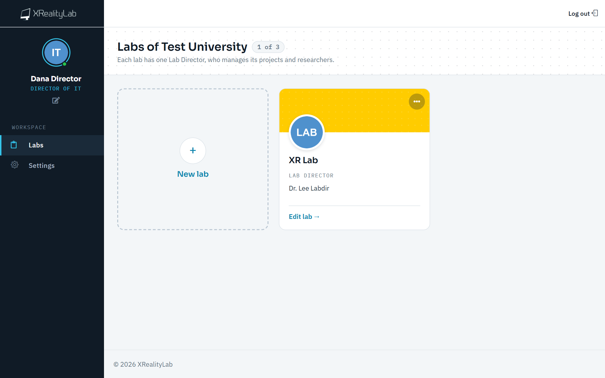
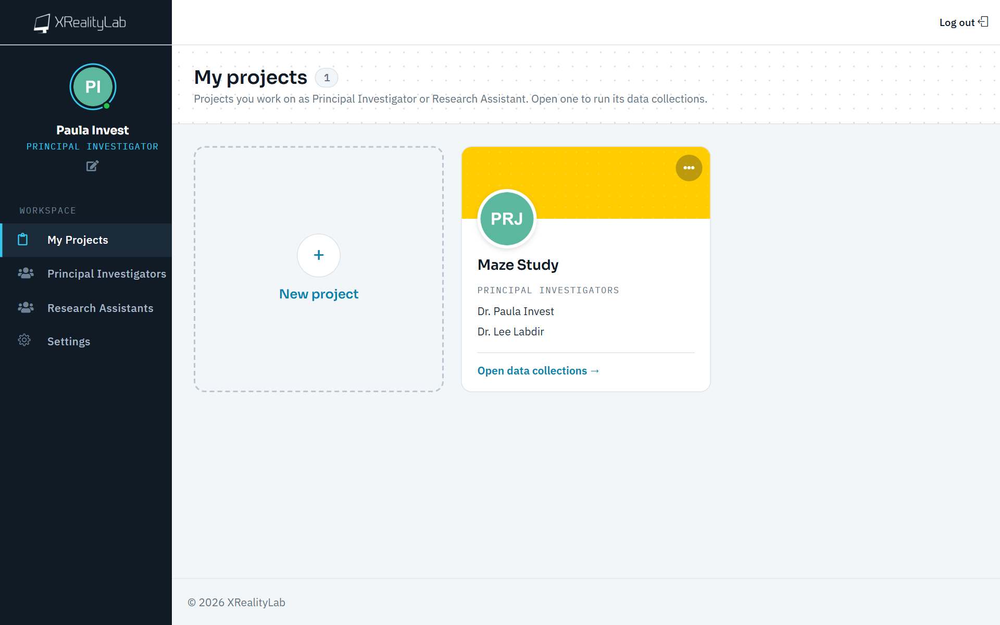
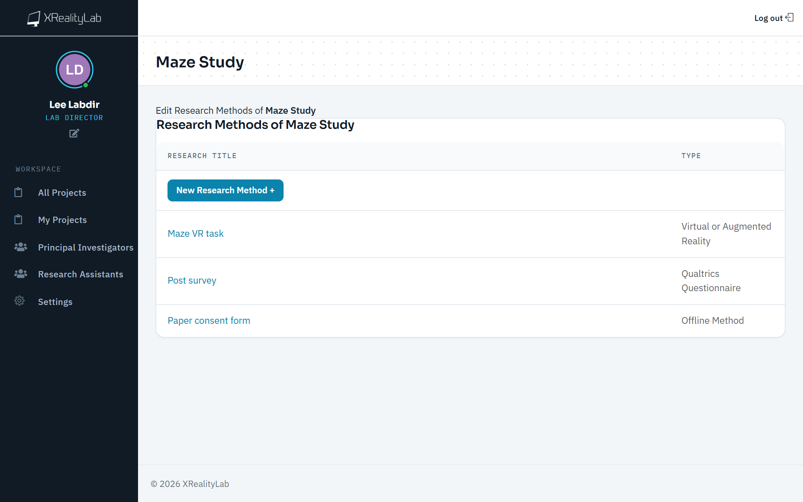
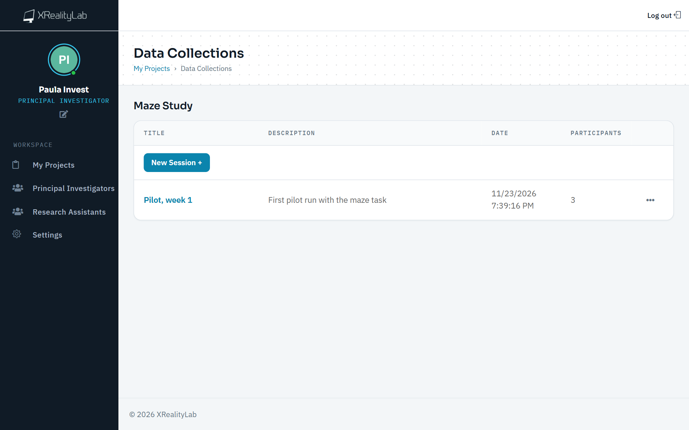
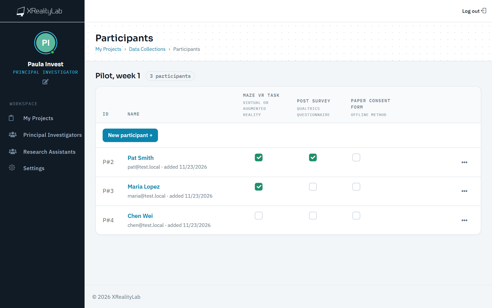
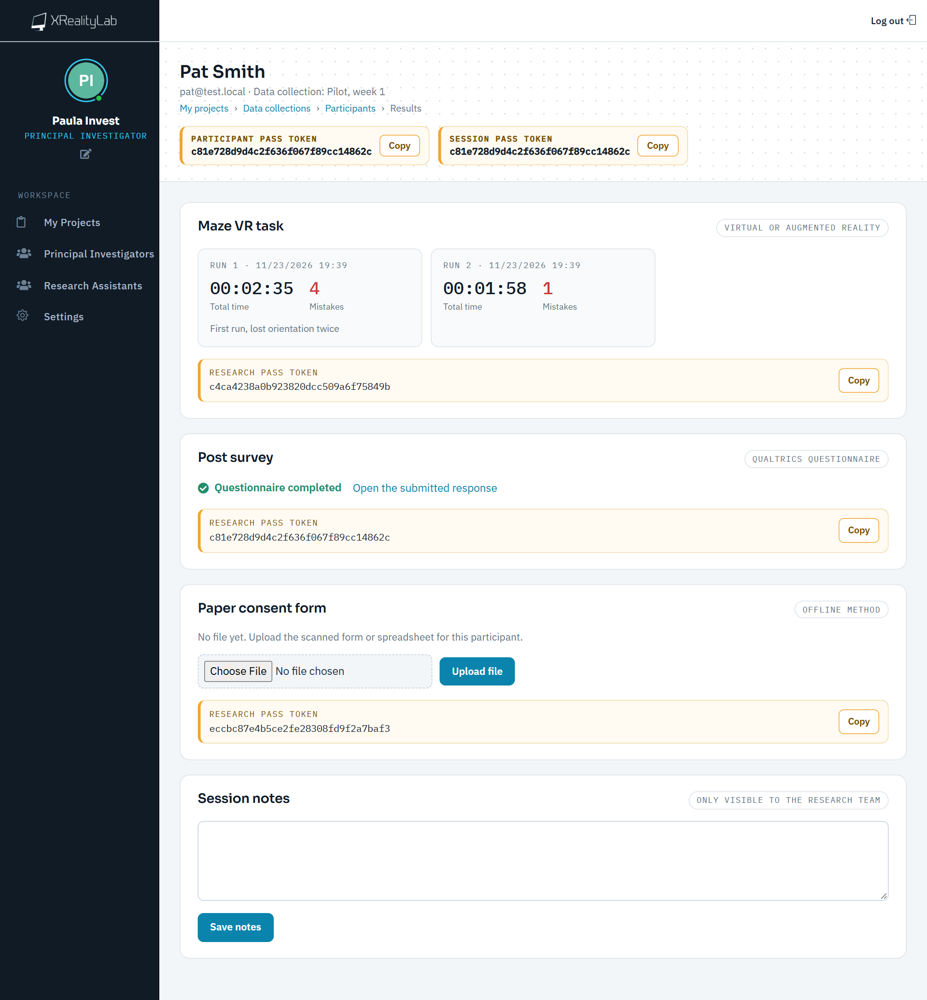

What the platform does, what each role can do in it, how to connect a Unity application or a questionnaire to it, and how to install it on another machine.
Version 1.40 · November 2026
XRealityLab is a web platform for research labs that run studies with participants in virtual and augmented reality. Researchers plan a study in the browser, register participants, and the VR / AR application sends each participant's results to the platform over an API. Questionnaire links and scanned paper forms can be attached to the same participant, so everything about one session ends up in one place and can be exported.
| Part | What it is |
|---|---|
| Web platform XRealityLabWebPlatform | The website researchers log in to. ASP.NET Core 3.1 MVC. |
| API XRealityLabAPI | A small web API used by Unity applications and questionnaires to read projects and save results. It has a built-in test page (Swagger) at its root address. |
| Database | Microsoft SQL Server. Both the web platform and the API use the same database. |
| File storage | Pictures and uploaded result files. Either an Azure Storage account or a folder on the server. |
| Invitations with a temporary password and password-reset links. SendGrid, any SMTP server, or none. |

There are five roles. Each role creates the level below it, so accounts are always created by someone, never by self-registration. The new user receives an e-mail with a temporary password.
| Role | Created by | Can do |
|---|---|---|
| Administrator | The installation (first start) | Create, edit and remove organizations. Each organization is created together with its Director of IT and a limit on how many labs it may have. |
| Director of IT | Administrator | Create, edit and remove the labs of their organization, each together with its Lab Director. Replace a Lab Director. |
| Lab Director | Director of IT | See all projects of the lab. Create projects. Create Principal Investigators and Research Assistants. Assign them to projects. Define research methods. |
| Principal Investigator | Lab Director or another Principal Investigator | Create projects. Add researchers and research methods to their projects. Run data collections: sessions, participants, results, exports. Send results from Unity. |
| Research Assistant | Lab Director or Principal Investigator | Run data collections in the projects they are assigned to. Send results from Unity. |
The menu on each organization card (the three dots) has Edit organization, Change Director of IT and Remove organization. Removing an organization also removes its labs, projects and users.

When a Lab Director is replaced, the previous one stays in the lab as a Principal Investigator.

Both work from My Projects. Opening a project shows its data collections. A Principal Investigator also sees the project menu and can create projects; a Research Assistant only sees the projects they were added to.

A Lab Director or Principal Investigator chooses New project, gives it a name, a description (both required), a colour and optionally a picture.
Project menu, then Research methods, then New Research Method +. Give the method a title and choose its type:
| Type | Where the result comes from |
|---|---|
| Virtual or Augmented Reality | Sent by the Unity application through the API: total time, number of mistakes and an optional note. A participant can have several runs. |
| Qualtrics Questionnaire | Reported through the API when the questionnaire is finished, with a link to the response. |
| Offline Method | A file (PDF or Excel) uploaded by the researcher on the Results page, for example a scanned form. The researcher ticks it as completed in the participants list. |

Project menu, then Principal Investigators or Research Assistants. The upper table lists the available people of the lab; the lower table lists those already in the project.
Open the project, then New Session +. A data collection is one round of data gathering, for example "Pilot, week 1".

Open the data collection, then New participant +. A participant is identified by e-mail address: if the address already exists, the same person is added to this session.
The list has one column per research method. A ticked box means a result exists. The box of an Offline method can be ticked by hand.

Click a participant's name to open their Results page. It shows:

Each CSV contains the session, the participant, the pass tokens and, per research method, its results.
The Unity application talks to the API, not to the website. It needs four things:
| What | Where to find it |
|---|---|
| API address | The address of the API, for example https://xrealitylab-api.azurewebsites.net. |
| Researcher e-mail and password | The account of a Principal Investigator or Research Assistant who is in the project and has changed the temporary password. |
| Participant and session pass token | Top of the participant's Results page, Copy button. |
| Research pass token | Results page, under the VR / AR research method. |
1. Log in and receive an auth token:
GET {api}/api/Users/email/{email}/{password}
{ "userId": 4, "firstName": "Paula", "lastName": "Invest",
"authToken": "kLqyunRjuKwX...", "roleId": 4, ... }
2. Save a result for the participant:
POST {api}/api/Project/ParticipantResult?_authToken={authToken, URL-encoded}
Content-Type: application/json
{
"participantMD5": "c81e728d9d4c2f636f067f89cc14862c",
"sessionMD5": "c81e728d9d4c2f636f067f89cc14862c",
"researchMD5": "c4ca4238a0b923820dcc509a6f75849b",
"time": "00:02:35",
"noOfMistakes": 4,
"notes": "optional, up to 250 characters"
}
{ "message": "Saved Data", "result": "Succeeded" }
$ % ^ *. It must be URL-encoded when it is put in the address.The repository contains docs/unity/XRealityLabClient.cs. Copy it into the Assets folder of the Unity project, add the component to a GameObject and fill in the fields in the Inspector. From your own code:
var lab = GetComponent<XRealityLabClient>();
// once, when the application starts
yield return lab.Login((ok, message) => Debug.Log(message));
// when the participant finishes the task
yield return lab.SendResult(TimeSpan.FromSeconds(155), mistakes: 4, notes: "",
done: (ok, message) => Debug.Log(message));
The script uses only UnityWebRequest and JsonUtility, so it needs no extra packages. For headsets, type the three pass tokens into the Inspector before building, or add your own input screen that sets participantPassToken, sessionPassToken and researchPassToken at run time.
Open the API address in a browser. The Swagger page lists every call and has a Try it out button for each.
A questionnaire is marked as completed when something calls the API with the participant's three pass tokens and, optionally, a link to the response:
POST {api}/api/Project/QualtricsResult?_authToken={authToken, URL-encoded}
Content-Type: application/json
{
"participantMD5": "...",
"sessionMD5": "...",
"researchMD5": "... (pass token of the Qualtrics research method)",
"documentUrl": "https://... link to the response, up to 200 characters",
"notes": "optional"
}
A typical set-up in Qualtrics:
...?p=PARTICIPANT&s=SESSION&r=RESEARCH.All addresses start with the API address. Every call except the log in needs _authToken in the query string. Errors are returned with HTTP status 404 and a body of the form { "message": "...", "result": "Failed" }.
| Call | Returns |
|---|---|
| GET /api/Users/email/{email}/{password} | Logs in. Returns the user and a new authToken. |
| GET /api/Project/GetMyProjects | The projects in which the user is Principal Investigator or Research Assistant, with their Principal Investigators. |
| GET /api/Project/GetDataCollections &projectId={id} | The sessions of a project, with the number of participants. |
| GET /api/Project/GetParticipants &sessionId={id} | The participants of a session. |
| POST /api/Project/ParticipantResult | Saves one VR / AR result (chapter 4). |
| POST /api/Project/QualtricsResult | Marks a questionnaire as completed (chapter 5). |
| GET /api/DirectorIT/GetLab | The lab of the user. |
| GET /api/Administrator/GetOrganization | The organization of the user. |
| Message | Meaning |
|---|---|
| AuthToken is incorrect | Log in again; the token was replaced or mistyped, or is not URL-encoded. |
| Participant session combination incorrect | The participant is not part of that session. |
| No access to this session | The researcher is not a Principal Investigator or Research Assistant of the project. |
| No access to this research | The research method belongs to another project. |
| No Virtual or Augmented reality research with this pass token | The research pass token belongs to a method of another type. |
| Too many post request for this session today | The limit of 50 results per session per day was reached. |
| Failed to save the data. Check that the ... pass tokens are correct. | One of the three pass tokens does not exist. |
The platform needs a machine that can run .NET Core 3.1 and a SQL Server database. On its first start it creates the database tables, the fixed data and the first Administrator by itself.
You need: the .NET Core 3.1 SDK, SQL Server (the Express or LocalDB edition is enough) and Git.
git clone https://github.com/gntakakis/XRealityLab.git cd XRealityLab
$env:ConnectionStrings__xrealitylabdb = "Server=(localdb)\MSSQLLocalDB;Database=XRealityLabdb;Trusted_Connection=True" $env:Database__AutoCreate = "true" $env:Seed__AdminEmail = "you@your-university.edu" $env:Seed__AdminPassword = "choose-a-password" $env:ASPNETCORE_URLS = "http://localhost:5080" $env:HttpsRedirection = "false"For SQL Server Express use
Server=.\SQLEXPRESS;Database=XRealityLabdb;Trusted_Connection=True.cd XRealityLabWebPlatform dotnet run --no-launch-profileThe window shows "Database schema created" and "First Administrator created". Open
http://localhost:5080 and log in.$env:ConnectionStrings__xrealitylabdb = "Server=(localdb)\MSSQLLocalDB;Database=XRealityLabdb;Trusted_Connection=True" $env:ASPNETCORE_URLS = "http://localhost:5081" $env:HttpsRedirection = "false" cd XRealityLabAPI dotnet run --no-launch-profileOpen
http://localhost:5081 to see the API test page.XRealityLabWebPlatform/App_Data/files. For real use, configure e-mail (chapter 8) and serve the platform over HTTPS.The repository contains docker-compose.yml, which starts SQL Server, the web platform and the API together. It needs a machine with Docker and at least 4 GB of memory.
copy .env.example .env (then fill in the passwords in .env) docker compose up -d --build
Web platform: http://localhost:8080. API: http://localhost:8081. Put a reverse proxy with HTTPS in front of both for real use. These files were written together with version 1.40 but have not been run end to end yet, so expect to adjust small things on first use.
dotnet publish -c Release, then deploy the output folder (Visual Studio "Publish", or zip deploy).Storage__AzureConnectionString.Settings can be placed in appsettings.json of each project or, better for passwords, in environment variables. In an environment variable the colon becomes two underscores: Mail:Provider becomes Mail__Provider. No password is stored in the source code.
| Setting | Meaning |
|---|---|
| ConnectionStrings:xrealitylabdb | SQL Server connection string. Required. |
| Database:AutoCreate | true creates the tables, the roles, the research method types and the first Administrator when they are missing. Existing data is never changed. Use it on a new installation. |
| Seed:AdminEmail Seed:AdminPassword | An Administrator account, created on start when no user with that e-mail exists yet. This is the only way to create an Administrator. The password needs at least 4 characters and one lower-case letter. |
| Storage:AzureConnectionString | Connection string of an Azure Storage account. Leave empty to store files on the server. |
| Storage:PublicBaseUrl | Public address of the stored files. With Azure: https://ACCOUNT.blob.core.windows.net/. Without: leave /files/. |
| Storage:LocalPath | Folder for files when Azure is not used. Default App_Data/files. |
| Mail:Provider | SendGrid, Smtp or None. With None, e-mails are written to the application log. |
| Mail:FromEmail, Mail:FromName | Sender. With SendGrid it must be a verified sender of your SendGrid account. |
| Mail:SendGridApiKey | API key for SendGrid. |
| Mail:SmtpHost, SmtpPort, SmtpUser, SmtpPassword, SmtpUseSsl | Settings for an SMTP server, for example the university mail server. |
| PlatformUrl | Public address of the website. Shown in invitation e-mails. |
| GoogleReCAPTCHA:ReCAPTCHA_Site_Key GoogleReCAPTCHA:ReCAPTCHA_Secret_Key | Optional reCAPTCHA v3 keys for the log in and forgot-password pages. The keys are tied to a domain, so create your own. Leave empty to switch reCAPTCHA off. |
| DataProtection:KeysPath | Folder in which the encryption keys are kept. Set it when running in Docker so that users stay logged in after a restart. |
| HttpsRedirection | false when a reverse proxy already handles HTTPS, or for a local test over HTTP. |
| Setting | Meaning |
|---|---|
| ConnectionStrings:xrealitylabdb | The same database as the web platform. Required. |
| HttpsRedirection | As above. |
App_Data/files folder.| Folder | Content |
|---|---|
| XRealityLabWebPlatform | Website: controllers, views, styles (wwwroot/css/xr-theme.css is the visual theme). |
| XRealityLabAPI | API controllers. |
| XRealityLab.Core | Shared models, settings, start-up and database preparation (Application/Setup/PlatformSetup.cs). |
| XRealityLab.Infrastructure | Database tables (Entity Framework Core). |
| XRealityLab.Service | File storage and e-mail. |
| docker, docs | Docker files, this guide and the Unity script. |
Every screen was restyled: new log in page, project and organization cards, tables, forms and a Results page that shows the pass tokens on screen instead of hiding them behind buttons.
These were left as they are, because changing them would break Unity applications that already use the platform or is beyond a retouch. They matter if the platform is ever used for sensitive data.
/ in passwords of accounts used from Unity.